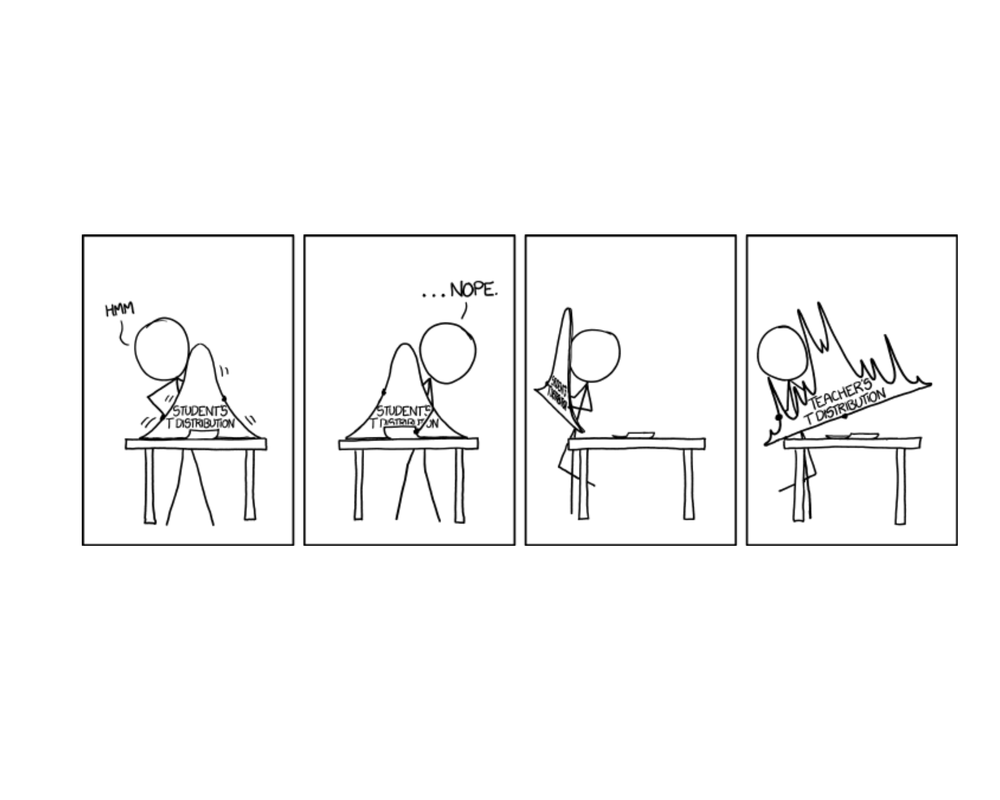
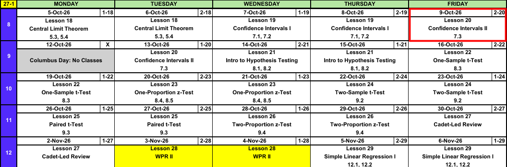
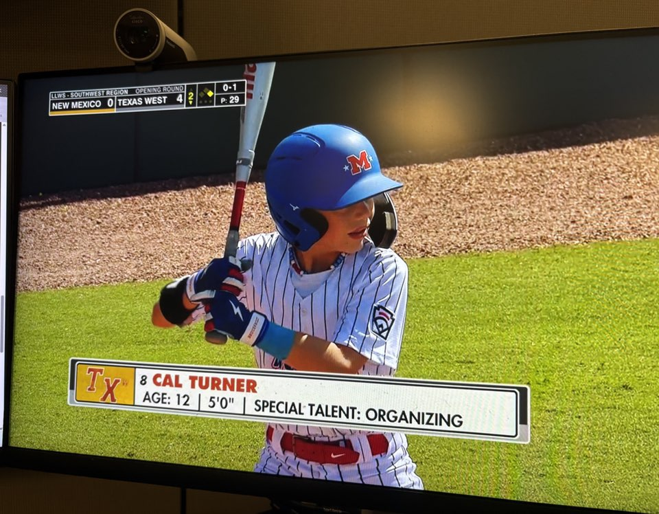
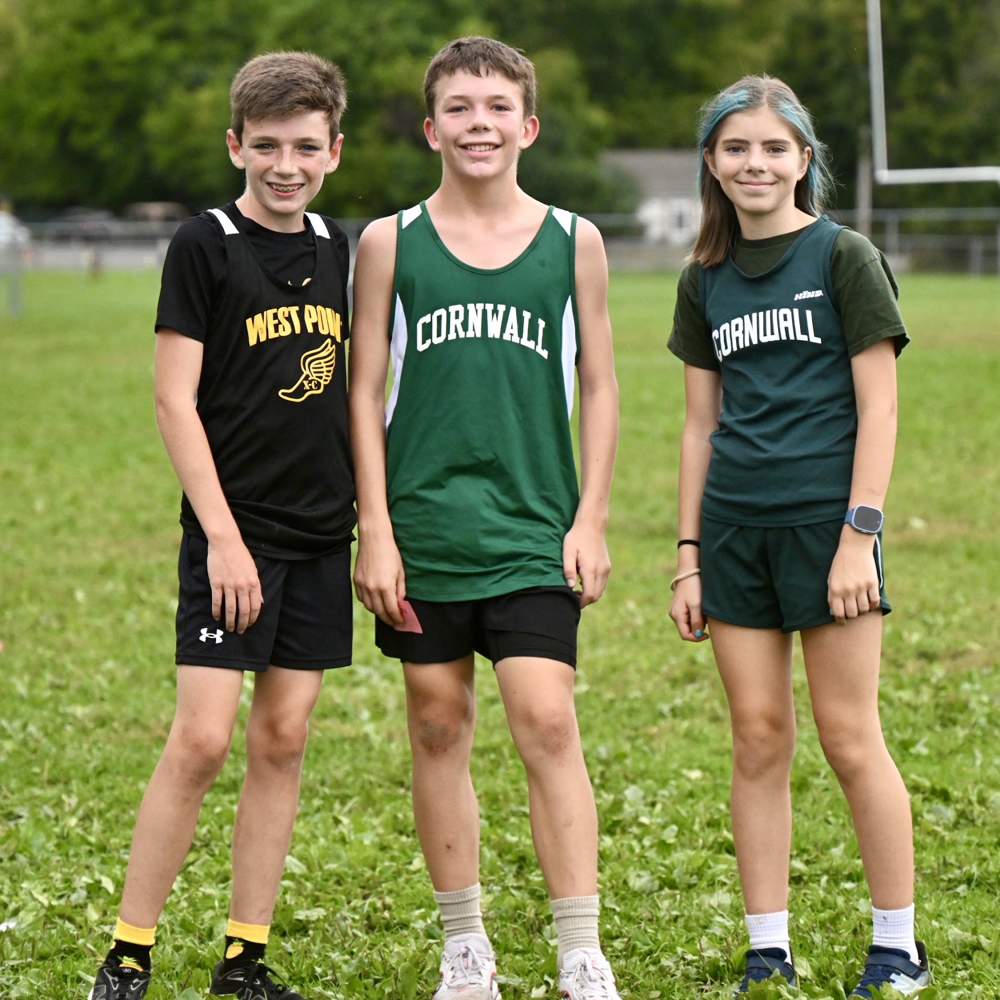

Lesson 20: Confidence Intervals II
Calendar

What We Did: Lessons 18 and 19
NoteReview: Central Limit Theorem (Lesson 18)
- \(\bar{X} \sim N\left(\mu,\ \left(\dfrac{\sigma}{\sqrt{n}}\right)^2\right)\), approximately, for \(n > 40\)
- Normal population: exact for any \(n\)
pnorm(x, mu, sigma/sqrt(n))- \(\hat{p} \sim N\left(p,\ \dfrac{p(1-p)}{n}\right)\), approximately, when \(np \ge 10\) and \(n(1-p) \ge 10\)
NoteReview: Confidence Intervals I (Lesson 19)
- \(\text{estimate} \pm \text{critical value} \times \text{standard error}\)
- Mean, \(n > 40\): \(\bar{x} \pm z_{\alpha/2}\,\dfrac{s}{\sqrt{n}}\)
- Proportion, \(n\hat{p} \ge 10\) and \(n(1-\hat{p}) \ge 10\): \(\hat{p} \pm z_{\alpha/2}\sqrt{\dfrac{\hat{p}(1-\hat{p})}{n}}\)
qnorm(0.975)for 95%,qnorm(0.95)for 90%,qnorm(0.995)for 99%- 95% confident describes the method
What We’re Doing: Lesson 20
Objectives
- Construct a confidence interval for a mean based on a normal population using the \(t\) distribution. (SLO 5)
- Determine the sample size needed to achieve a specified interval width. (SLO 5)
- Interpret a confidence interval correctly. (SLO 6)
Required Reading
Devore 7.3
Break!
Family
Since we got to meet your families, I’d like to introduce mine.



DMath Frisbee!!

Math vs DMI
NoteResult
9-0
15-3
Open Vantage
EDA: 25 points, due 18 October
The Takeaway for Today
NoteKey Concepts from Lesson 20
- Small sample, normal population: \(\bar{x} \pm t_{\alpha/2,\,n-1}\,\dfrac{s}{\sqrt{n}}\)
- Degrees of freedom: \(n - 1\)
- Critical value:
qt(0.975, n - 1)for 95% - \(t_{\alpha/2,\,n-1} > z_{\alpha/2}\), so the \(t\) interval is wider
- Sample size for width \(w\): \(n = \left(\dfrac{2\,z_{\alpha/2}\,\sigma}{w}\right)^2\), rounded up
Last Lesson: Two Intervals
ImportantMean
\[\bar{x} \pm z_{\alpha/2}\,\frac{s}{\sqrt{n}}\]
Conditions: random sample, \(n > 40\)
Interpretation: We are 95% confident the true mean [context] is between [lower] and [upper] [units].
ImportantProportion
\[\hat{p} \pm z_{\alpha/2}\sqrt{\frac{\hat{p}(1-\hat{p})}{n}}\]
Conditions: random sample, \(n\hat{p} \ge 10\) and \(n(1-\hat{p}) \ge 10\)
Interpretation: We are 95% confident the true proportion of [context] is between [lower] and [upper].
Study Hours
A random sample of \(81\) cadets averages \(\bar{x} = 18.4\) hours of studying per week with \(s = 5.4\) hours.
a) Build a 95% confidence interval for \(\mu\).
TipAnswer
\[18.4 \pm 1.96\,\frac{5.4}{\sqrt{81}} = 18.4 \pm 1.176 = (\mathbf{17.224},\ \mathbf{19.576})\]
18.4 + c(-1, 1) * qnorm(0.975) * 5.4 / sqrt(81)
b) What conditions allow us to do this?
TipAnswer
Random sample. \(n = 81 > 40\).
c) Interpret the interval.
TipAnswer
We are 95% confident the true mean weekly study time of all cadets is between 17.224 and 19.576 hours.
Cars
In a random sample of \(200\) cadets, \(58\) have a car at West Point.
a) Build a 95% confidence interval for \(p\).
TipAnswer
\[\hat{p} = \frac{58}{200} = \mathbf{0.29}\]
\[0.29 \pm 1.96\sqrt{\frac{0.29(0.71)}{200}} = 0.29 \pm 0.0629 = (\mathbf{0.2271},\ \mathbf{0.3529})\]
0.29 + c(-1, 1) * qnorm(0.975) * sqrt(0.29 * 0.71 / 200)
b) What conditions allow us to do this?
TipAnswer
Random sample. \(n\hat{p} = 58 \ge 10\) and \(n(1-\hat{p}) = 142 \ge 10\).
c) Interpret the interval.
TipAnswer
We are 95% confident the true proportion of all cadets who have a car at West Point is between 0.2271 and 0.3529.
What Happens When the Sample Is Small?
Same question, but only \(12\) cadets: \(\bar{x} = 17.9\) hours, \(s = 5.1\) hours.
\(n = 12\) is not greater than \(40\). The large-sample interval does not apply.
- The CLT does not make \(\bar{X}\) normal for small \(n\)
- \(s\) from \(12\) cadets is a rough estimate of \(\sigma\)
\[\require{cancel}\bar{x} \pm \cancel{z_{\alpha/2}}\,\frac{s}{\sqrt{n}}\]
We must use a different distribution: the \(t\) distribution.
The \(t\) Distribution
\[\bar{x} \pm t_{\alpha/2,\,n-1}\,\frac{s}{\sqrt{n}}\]
- \(\bar{x}\): the sample mean, our estimate of \(\mu\)
- \(t_{\alpha/2,\,n-1}\): the critical value, from the \(t\) distribution
- \(n - 1\): the degrees of freedom
- \(s\): the sample standard deviation
- \(n\): the sample size
- \(\dfrac{s}{\sqrt{n}}\): the standard error
The Critical Value
\(t_{\alpha/2,\,n-1}\) leaves \(\alpha/2\) in each tail of the \(t\) distribution with \(n - 1\) degrees of freedom.
qt(0.975, 11) \(=\) 2.201
| \(n\) | df | R-Lite, 95% | critical value |
|---|---|---|---|
| 5 | 4 | qt(0.975, 4) |
2.776 |
| 12 | 11 | qt(0.975, 11) |
2.201 |
| 30 | 29 | qt(0.975, 29) |
2.045 |
| 100 | 99 | qt(0.975, 99) |
1.984 |
qnorm(0.975) |
1.960 |
Confidence Interval for a Mean, Small Sample
ImportantOne-Sample \(t\) Confidence Interval for \(\mu\)
\[\bar{x} \pm t_{\alpha/2,\,n-1}\,\frac{s}{\sqrt{n}}\]
- Conditions: random sample, population approximately normal
- Estimate: \(\bar{x}\)
- Critical value: \(t_{\alpha/2,\,n-1}\)
- Standard error: \(\dfrac{s}{\sqrt{n}}\)
Study Hours, 12 Cadets
\(n = 12\), \(\bar{x} = 17.9\), \(s = 5.1\). Weekly study time is approximately normal.
a) Find the critical value for 95%.
TipAnswer
\(\text{df} = 12 - 1 = 11\).
qt(0.975, 11) \(=\) 2.201
b) Build a 95% confidence interval for \(\mu\).
TipAnswer
\[17.9 \pm 2.201\,\frac{5.1}{\sqrt{12}} = 17.9 \pm 3.240 = (\mathbf{14.660},\ \mathbf{21.140})\]
17.9 + c(-1, 1) * qt(0.975, 11) * 5.1 / sqrt(12)
c) Interpret the interval.
TipAnswer
We are 95% confident the true mean weekly study time of all cadets is between 14.660 and 21.140 hours.
d) What if we had used \(1.96\)?
TipAnswer
\((15.014,\ 20.786)\). Too narrow. It would capture \(\mu\) less than 95% of the time.
Sample Size
The width of the interval for a mean:
\[w = 2\,z_{\alpha/2}\,\frac{\sigma}{\sqrt{n}}\]
Solve for \(n\).
ImportantSample Size for a Specified Width
\[n = \left(\frac{2\,z_{\alpha/2}\,\sigma}{w}\right)^2\]
- \(w\) is the full width of the interval
- \(\sigma\) comes from a prior study or a pilot sample
- Always round up
Study Hours, How Many Cadets?
We want a 95% confidence interval for mean weekly study time that is \(2\) hours wide. Use \(\sigma = 5.4\).
TipAnswer
\[n = \left(\frac{2(1.96)(5.4)}{2}\right)^2 = 112.02\]
Round up: \(n = \mathbf{113}\) cadets.
(2 * qnorm(0.975) * 5.4 / 2)^2
What We Know
| Mean | Proportion | |
|---|---|---|
| Large sample | \(\bar{x} \pm z_{\alpha/2}\,\dfrac{s}{\sqrt{n}}\) random sample, \(n > 40\) |
\(\hat{p} \pm z_{\alpha/2}\sqrt{\dfrac{\hat{p}(1-\hat{p})}{n}}\) random sample, \(n\hat{p} \ge 10\) and \(n(1-\hat{p}) \ge 10\) |
| Small sample | \(\bar{x} \pm t_{\alpha/2,\,n-1}\,\dfrac{s}{\sqrt{n}}\) random sample, population approximately normal |
No interval in this course |
Board Problems
Problem 1: Rifle Qualification
A random sample of \(10\) cadets fires the rifle qualification table. Hits out of \(40\): \(\bar{x} = 31.2\), \(s = 4.1\). Scores are approximately normal.
NoteQuestions
Why not use the large-sample interval?
Find the critical value for 95%.
Build a 95% confidence interval for \(\mu\).
Interpret the interval.
True or false: 95% of cadets hit between 28.267 and 34.133 targets.
TipAnswers
\(n = 10\) is not greater than \(40\).
\(\text{df} = 9\).
qt(0.975, 9)\(=\) 2.262\[31.2 \pm 2.262\,\frac{4.1}{\sqrt{10}} = 31.2 \pm 2.933 = (\mathbf{28.267},\ \mathbf{34.133})\]
31.2 + c(-1, 1) * qt(0.975, 9) * 4.1 / sqrt(10)
We are 95% confident the true mean number of hits for all cadets is between 28.267 and 34.133.
False. The interval is about \(\mu\), not about individual cadets.
Problem 2: Ruck March
A random sample of \(16\) cadets completes a 12 mile ruck march. Times in minutes: \(\bar{x} = 172\), \(s = 14\). Times are approximately normal.
NoteQuestions
Build a 90% confidence interval for \(\mu\).
Build a 99% confidence interval for \(\mu\).
Which is wider?
The standard is 180 minutes. Is 180 a plausible value for \(\mu\)?
TipAnswers
- \(\text{df} = 15\).
qt(0.95, 15)\(=\) 1.753
\[172 \pm 1.753\,\frac{14}{\sqrt{16}} = 172 \pm 6.136 = (\mathbf{165.864},\ \mathbf{178.136})\]
172 + c(-1, 1) * qt(0.95, 15) * 14 / sqrt(16)
qt(0.995, 15)\(=\) 2.947
\[172 \pm 2.947\,\frac{14}{\sqrt{16}} = 172 \pm 10.313 = (\mathbf{161.687},\ \mathbf{182.313})\]
172 + c(-1, 1) * qt(0.995, 15) * 14 / sqrt(16)
The 99% interval.
At 90%, no. 180 is above the interval. At 99%, yes. 180 is inside the interval.
Problem 3: Which Critical Value?
NoteQuestions
For each, give the R-Lite command for the critical value, or say that neither interval applies.
95% interval for a mean, \(n = 100\).
95% interval for a mean, \(n = 15\), normal population.
90% interval for a mean, \(n = 25\), normal population.
99% interval for a proportion, \(n = 300\), \(\hat{p} = 0.4\).
95% interval for a mean, \(n = 15\), heavily skewed population.
TipAnswers
qnorm(0.975)\(=\) 1.960qt(0.975, 14)\(=\) 2.145qt(0.95, 24)\(=\) 1.711qnorm(0.995)\(=\) 2.576Neither. \(n\) is not greater than \(40\) and the population is not normal.
Problem 4: Mess Hall Line
We want to estimate the mean wait in the mess hall line. A prior study gives \(\sigma = 4\) minutes.
NoteQuestions
How many cadets do we need for a 95% interval that is \(1\) minute wide?
How many for a 99% interval that is \(1\) minute wide?
How many for a 95% interval that is \(0.5\) minutes wide?
Cutting the width in half does what to \(n\)?
TipAnswers
- \[n = \left(\frac{2(1.96)(4)}{1}\right)^2 = 245.85\]
Round up: \(\mathbf{246}\).
(2 * qnorm(0.975) * 4 / 1)^2
- \[n = \left(\frac{2(2.576)(4)}{1}\right)^2 = 424.63\]
Round up: \(\mathbf{425}\).
(2 * qnorm(0.995) * 4 / 1)^2
- \[n = \left(\frac{2(1.96)(4)}{0.5}\right)^2 = 983.41\]
Round up: \(\mathbf{984}\).
(2 * qnorm(0.975) * 4 / 0.5)^2
- Multiplies it by 4.
Before You Leave
Today
- Small sample, normal population: \(\bar{x} \pm t_{\alpha/2,\,n-1}\,s/\sqrt{n}\)
- \(\text{df} = n - 1\),
qt(0.975, n - 1) - \(t\) critical values are larger than \(z\) critical values
- Sample size for width \(w\): \(n = (2\,z_{\alpha/2}\,\sigma/w)^2\), rounded up
Any questions?
Next Lesson
Lesson 21: Intro to Hypothesis Testing
- State null and alternative hypotheses and identify the test statistic and rejection region
- Carry out a \(z\) test for a population mean and compute and interpret the P-value
- Define Type I and Type II errors and describe how the Type II error probability (\(\beta\)) depends on the true parameter value and sample size
- Interpret a non-significant result: failing to reject \(H_0\) does not prove \(H_0\) is true
Reading: Devore 8.1, 8.2
Upcoming Graded Events
- WebAssign 7.3: due at the start of Lesson 21
- EDA: due 18 October
- WPR II: Lesson 28 (covers Lessons 18-26)
- TEE: 15-18 Dec 2026